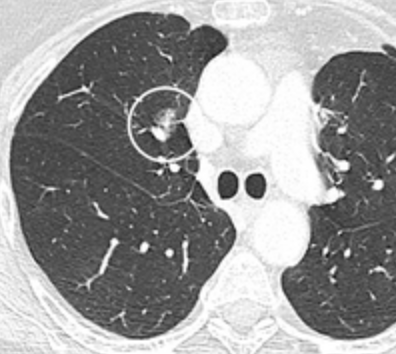

Ficha del catálogo
Nódulo pulmonar subsólido
- Sistema
- Respiratorio
- Modalidad
- TC
- Región
- Tórax
- Dificultad
- Avanzado
Nódulo que en la ventana pulmonar muestra atenuación en vidrio deslustrado, ya sea de forma pura o con un componente sólido interno. Cuando persiste en el tiempo se asocia con frecuencia al espectro del adenocarcinoma de crecimiento lepídico. Su manejo es distinto al del nódulo sólido porque el crecimiento es lento y el seguimiento debe prolongarse durante años.
Técnica
Tomografía de tórax sin contraste con cortes finos y reconstrucción de alta resolución, valorada siempre en ventana pulmonar y con la misma técnica en los controles.
Qué observar
- Atenuación en vidrio deslustrado que no borra los vasos que atraviesa la lesión
- Presencia y tamaño del componente sólido interno
- Bordes lobulados o espiculados que aumentan la sospecha
- Burbujas de aire y broncograma dentro de la lesión
- Persistencia en un control diferido, que descarta origen inflamatorio
- Cambios de tamaño o aparición de componente sólido en el seguimiento
Hallazgos
Nódulo en vidrio deslustrado persistente, con o sin componente sólido interno, que mantiene visibles los vasos en su interior.
Perlas
El componente sólido es el que manda porque se relaciona con el crecimiento invasivo. Un nódulo en vidrio deslustrado que empieza a desarrollar una parte sólida debe considerarse sospechoso aunque el tamaño global no cambie.
Diagnóstico diferencial
- Foco inflamatorio o infeccioso
- Desaparece o disminuye en el control a los pocos meses.
- Hemorragia focal
- Se resuelve con rapidez y suele tener contexto clínico claro.
- Fibrosis focal
- Morfología en banda con retracción y estabilidad prolongada.
Simuladores
- Vidrio deslustrado por espiración incompleta
- Artefacto de movimiento junto al corazón
- Atelectasia subsegmentaria mínima
Por modalidad
- RX
- Casi siempre invisible por su baja densidad
- TC
- Única técnica capaz de detectarlo y de seguir su evolución
Protocolo
Cortes finos sin contraste con reconstrucción de alta resolución, repitiendo el mismo protocolo y el mismo grosor de corte en cada control para permitir comparaciones fiables.
Clasificación
Se dividen en nódulos en vidrio deslustrado puro y nódulos parcialmente sólidos, distinción que determina el intervalo y la duración del seguimiento.
Errores frecuentes
- Aplicar al nódulo subsólido los mismos plazos de seguimiento que al sólido
- Medir con ventanas o grosores de corte distintos entre controles
- Interrumpir el seguimiento pronto por la estabilidad aparente

nodulo subsolido vidrio deslustrado adenocarcinoma seguimiento componente solido